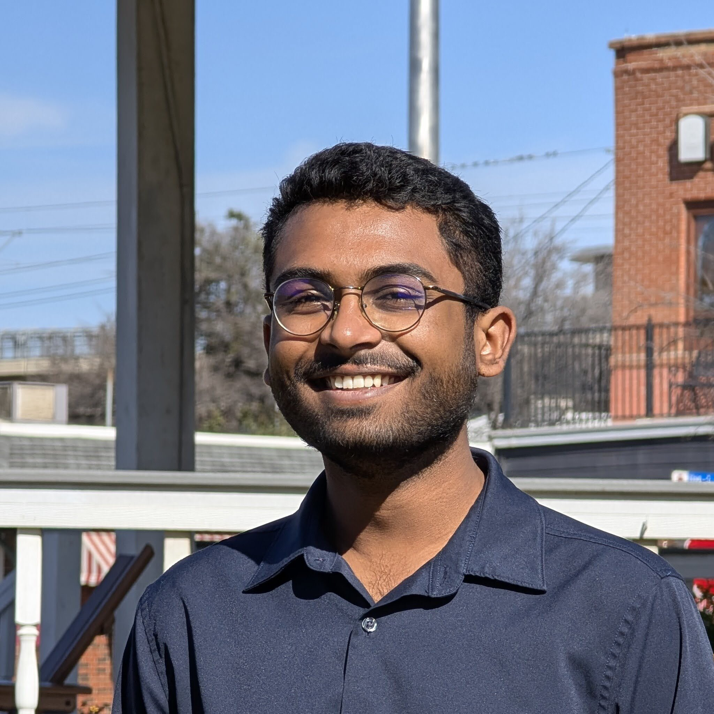

Iniyan Joseph

Education
2026 - Present Ph.D. in Computer Science, Purdue University
Advisor: Alex Psomas
2023 - 2025 B.S. in Computer Science, University of Texas at Dallas, August 2025, Graduated Summa Cum Laude (3.987/4)
Research
- PropType: Everyday Props as Typing Surfaces in Augmented Reality
Gil, Hyunjae, Pratap, Ashish, Joseph, Iniyan, Kim, Jin Ryong)
In the Proceedings of the 2025 CHI Conference on Human Factors in Computing Systems
Honorable Mention - AI-Driven Adaptive Extended Reality System and Method for Personalized Cognitive, Emotional, and Behavioral Interventions
Immanual Joseph, Savitha Sundar, Iniyan Joseph)
Patent Pending - Survey of Discrete Fair Division
Joseph, Iniyan)
Written for CS 4V95 Independent Study with Emily Fox - Design Challenges of in-Air Thumb Typing on Head-Mounted Displays
Gil, Hyunjae, Joseph, Iniyan, Kim, Jin Ryong)
Under Submission
Employment
2025 - Present Math Teacher
KD College Prep
2025 - 2025 Software Engineer
ReviveXR
2025 - 2025 Substitute Teacher
Frisco Independent School District
2025 - 2025 Grader – Discrete Math for Computing
University of Texas at Dallas
2022 - 2025 Pianist (Seasonal)
Cedar Creek Lake United Methodist Church
Awards & Honors
2026 - 2027 Herbold Scholarship
Purdue University
2023 - 2025 Academic Excellence Scholarship
University of Texas at Dallas
2023 - 2025 Dean's List
University of Texas at Dallas (Fall 2023, Spring 2024, Spring 2025, Summer 2025)
Activities
2024 - 2025 UTD Algorithms Club
President
2023 - 2025 UTD Codeburners